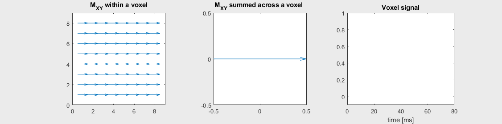
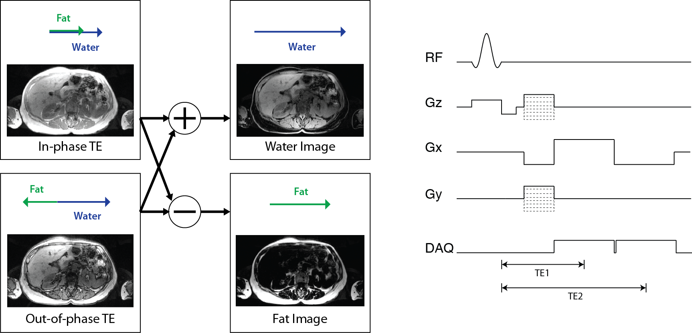

In Vivo Contrast Mechanisms#
In addition to the basic contrast mechanisms based on T1, T2 and proton density, in vivo tissues and interactions create additional sources of contrast. These include T2*, susceptibility, fat versus water, and admisistration of contrast agents. Additional important sources of contrast in vivo include flow and magnetization transfer, but these are not covered here.
Learning Goals#
Describe how various types of MRI contrast are created
Describe the mechanisms that create susceptibility contrast
Describe the mechanisms that create T2* relaxation
Describe how fat/water imaging works
Describe how Gd-based contrast agents work
Off-resonance and Chemical Shift#
Off-resonance#
Ideally, the magnetic field is uniform in the absense of any applied gradients. However, in practice there are unavoidable variations in the magnetic field that lead to changes in resonance frequency. These magnetic field variations are referred to as “off-resonance”, and can be represented as
These are due imperfections in the main \(B_0\) magnet as well as subject-specific changes in the magnetic field that are largely due to magnetic susceptibility effects.
Chemical Shift#
The resonance frequency can also change due the chemical environment of the nuclei. This is referred to as chemical shift, and is represented as
where \(\delta_{cs}\) is the chemical shift in parts per million (ppm) and \(\Delta f_{cs}\) is the frequency shift.
Susceptibility Induced Contrasts#
Differences in magnetic susceptibility between materials and tissues create differences in the local magnetic field. This leads to differences in the resonance frequency of the spins, which can be used to create contrast in MRI images. Local changes in resonance frequency can also lead to changes in measured transverse relaxation time, and this phenomenon is referred to as \(T_2^*\) relaxation.
Phase Contrast#
The off-resonance causes the transverse magnetization to precess at a different rate. When imaging is performed, the transverse magnetization will have a different phase depending on this off-resonance. This difference in phase can be detected, and leads to phase differences in the resulting images. When trying to create susceptibility contrast, other sources of phase differences must be removed. These other sources of phase differences include imperfections in the main magnetic field, chemical shift effects, and RF coil induced phase.
\(T_2^*\)#
Ideally, the MRI signal decays with a time constant of \(T_2\), the transverse decay rate. However, in practice every imaging voxel contains off-resonance that leads to changes in the signal decay. We characterize this change in signal decay with \(T_2^*\).
The smallest size we can measure with MRI is an imaging voxel, so our image measurements are a sum of the transverse magnetizations across the voxel, including both \(T_2\) and off-resonance:
(Note that any effects of applied gradients are removed during the image reconstruction process.)
The mechanism of this decay is that, across an imaging voxel, the transverse magnetizations across the voxel precess at slightly different rates. This is called “de-phasing”, and means that when the transverse magnetization is averaged across the voxel it’s overall magnitude is reduced. This is illustrated in the examples below (generated by t2star_spinecho_illustration.m)
 |
|
|---|---|
No off-resonance, \(T_2 = 80\) ms |
|
Mild off-resonance, \(T_2 = 80\) ms |
Severe off-resonance \(T_2 = 80\) ms |
\(T_2^*\) is an approximation of these dephasing effects, and depends on the voxel size and location. It is often broken up as follows to separate out the additional dephasing rate, \(1/T_2'\):
\(T_2^*\) contrast#
\(T_2^*\) includes \(T_2\) as well as additional macroscopic dephasing due to local magnetic field inhomogeneities. The microscopic dephasing (\(T_2\)) cannot be refocused, but the macroscopic dephasing effects can be refocused by using a spin echo sequence. The macroscopic dephasing is caused by differences in magnetic susceptibility between materials and tissues.
While often the macroscopic dephasing effects creating \(T_2^*\) are often undesirable and considered artifacts, \(T_2^*\) is also an important source of contrast to reflect differences in magnetic susceptibility:
Iron deposition: The presence of iron in a tissue will create shorter \(T_2^*\) due to the strong magnetic susceptibility of iron.
Calcifications: The presence of calcium in a tissue will create shorter \(T_2^*\) due to the strong magnetic susceptibility of calcium.
Oxygenated vs deoxygenated blood: Deoxygenated blood will have shorter \(T_2^*\) than oxygenated blood due to the magnetic susceptibility of deoxygenated hemoglobin. This can be used for selectively imaging veins, and is also the basis of blood oxygen level dependent (BOLD) functional MRI.
Fat/Water Imaging#
The major sources of signal in MRI are hydrogen atoms in water molecules and hydrogen atoms in lipids. In lipids, the protons experience a different chemical shift, meaning they have a different resonance frequence from water protons. This can be exploited to create images that isolate fat and water signals.
While lipids have a relatively complex set of chemical shifts, in MRI a general “fat” signal is typically modeled as a single peak that has a -3.5 parts per million (ppm) shift from water. This leads to a resonance frequency shift \(\Delta f_{cs}\) of approximately 220 Hz at 1.5 T and 440 Hz at 3 T.
Separate fat and water images are created by so-called “Dixon” methods, which acquire images at multiple echo times and then use the phase differences that result from the different resonance frequencies to separate them. Ideally, the signal in these images can be represented as
Then fat and water images can be created from in-phase TE, \(TE_{in-phase} = n / \Delta f_{cs}\) and out-of-phase TE, \(TE_{out-of-phase} = (n+ 1/2) / \Delta f_{cs}\), images:
In practice, additional corrections are required to account for off-resonance, \(\Delta f_r(\vec r)\), and more advanced methods also use a multi-peak model accounting for the various chemical shifts in fatty tissue.

Contrast Agents#
Contrast agents used in MRI, such as gadolinium chelates and superparamagnetic iron oxides, shorten the relaxation rates wherever they are present. This is quantified by their relaxivities, \(r_1, r_2\), typiclaly in units of [L / (mmol s)]:
Where \(\hat{T}_1, \hat{T}_2\) are the relaxation time constants with the agent present, and \([CM]\) is the contrast agent concentration, typically in units of [mM = mmol/L].